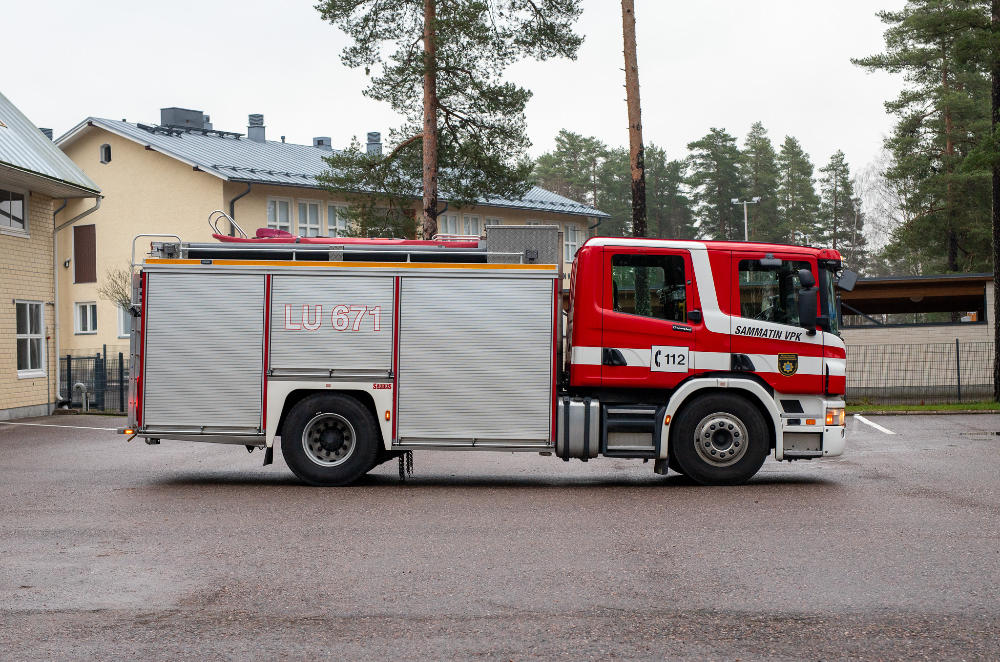
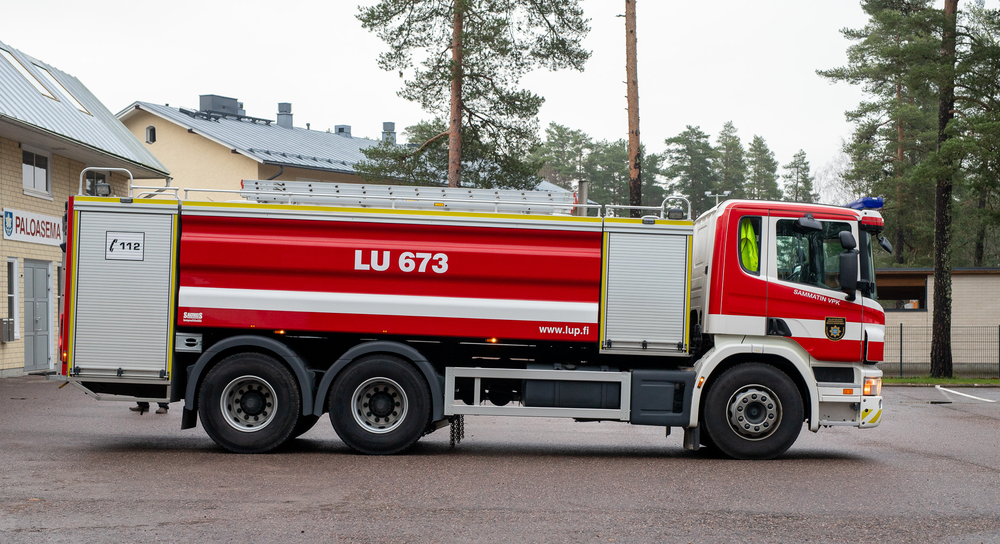
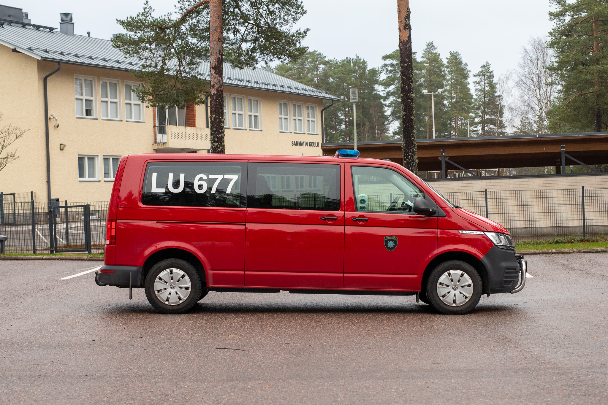
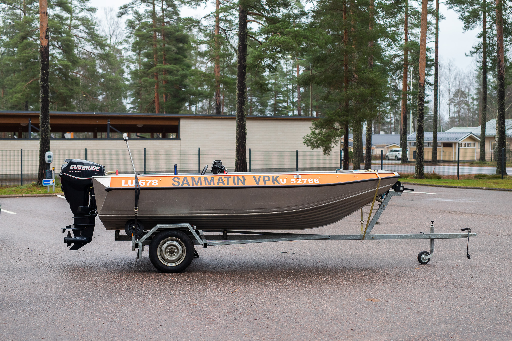

Palokunnan kalustoon kuuluu pelastusyksikkö LU671, säiliöyksikkö LU673, miehistönkuljetus-/ensivasteyksikkö LU677 sekä vene LU678.

Scania P340, 2007
Vettä 3500L

Scania P360, 2011
Vettä 10 400L, vaahtonestettä 650L

Volkswagen Caravelle, 2012

Buster R + EVINRUDE e-tec 30